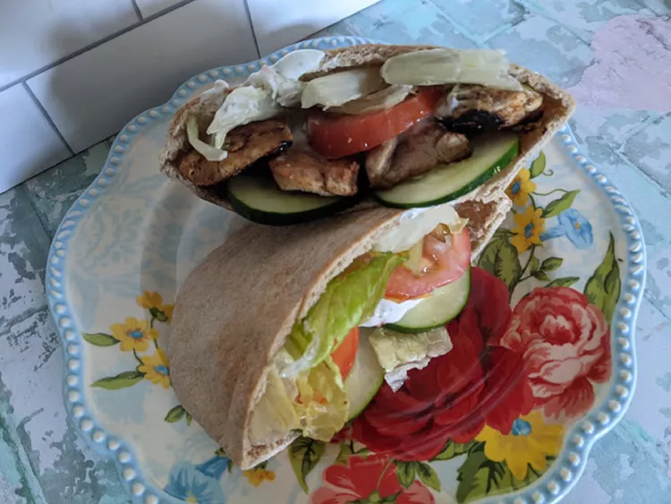

Home
Chicken Shawarma Wrap

Description
A chicken shawarma wrap is a delicious Middle Eastern-inspired street food
featuring thin layers of tender, marinated chicken roasted on a vertical
spit, wrapped in a soft flatbread or tortilla with various fresh
vegetables and flavorful sauces
Ingredients
Marinade
- ½ cup Greek yogurt
- 1 tablespoon garlic, minced
- 1 tablespoon lemon juice
- ½ teaspoon ground cinnamon
- ½ teaspoon dried oregano
- ½ teaspoon salt
- ¼ teaspoon ground nutmeg
- ¼ teaspoon ground cloves
- 1 pound skinned, boned chicken breast, cut into thin strips
- 1 tablespoon olive oil
Yogurt Sauce
- ½ cup plain Greek yogurt
- ½ teaspoon lemon juice
- ½ teaspoon bottled minced garlic
- ¼ teaspoon dried dill weed
- ⅛ teaspoon garlic powder
- ⅛ teaspoon salt
Sandwich
- ½ head romaine lettuce, shredded
- 1 cucumber, diced
- 2 medium Roma tomatoes, diced
- 4 (6 inch) pita bread rounds
Steps
-
Combine Greek yogurt, garlic, lemon juice, cinnamon, oregano, salt,
nutmeg, and cloves in a plastic container or resealable bag. Add chicken
strips and shake until ingredients are evenly combined and chicken is
well coated. Refrigerate at least 4 hours, up to overnight.
-
When you are ready to make the sandwiches, heat olive oil in a large
nonstick skillet over medium-high heat. When oil is hot, add marinated
chicken, and sear until golden brown on both sides and no longer pink in
the centers, 8 to 10 minutes, depending on thickness of the chicken
pieces.
-
While the chicken is cooking, combine Greek yogurt, lemon juice, garlic,
dill, garlic powder, and salt in a bowl or small resealable container,
stir well to blend. Taste and adjust seasonings if desired.
- Once chicken is cooked and sauce is prepared, assemble sandwiches by dividing meat, lettuce, cucumber, and tomatoes between your pita. Add a generous smear of the yogurt sauce (to your taste preference).
Back to top